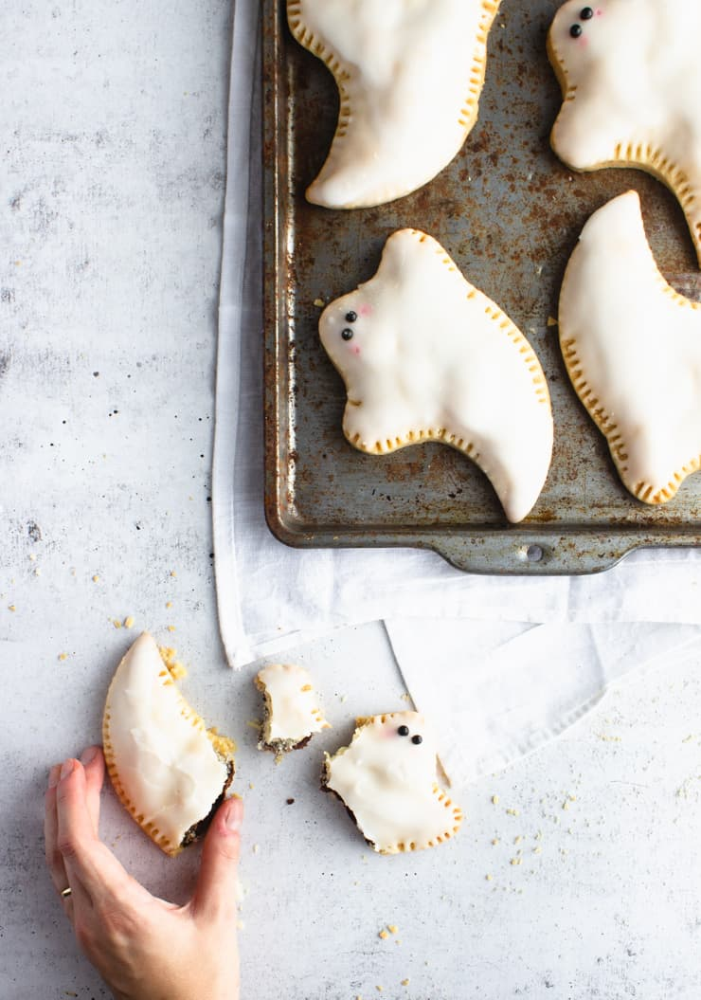

Ghost Tarts

Description
A sweet treat with a taste that will follow you to the grave. A wonderful
recipe to make as a witching hour snack or for a quick breakfast.
Ingredients
For the Tarts:
- 2 cups all purpose flour
- 2 tbsp granulated sugar
- 1/2 tsp salt
- 1 cup salted butter
- 3-4 tbsp ice water
- 1/4 cup nutella (or another filling)
For the Glaze:
- 3 cups powdered sugar
- 5 tbsp milk
- 1/2 tsp vanilla extract
- Black nonpareils
Steps
- In a large bowl, stir the flour, sugar, and salt.
- Add cubed butter and beat until the mixture resembles course sand.
- Add the ice water 1 tbsp at a time until the dough comes together
(you may not need all 4 tbsp).
- Divide your dough in 2 and flatten into discs.
- Wrap dough in plastic wrap and chill for 45 minutes to 1 hour.
- Roll out first ball of dough onto a light floured surface.
- Using a large cookie cutter, cut out 8 more ghosts.
- Spoon a couple tsp of filling and spread till about 1/3" is left around the edge.
- Roll out remaining dough and cut out 8 more ghosts.
- Wet the edge of the filled side with water and cover with other side; fork to seal.
- Poke air holes into the top of tart with fork.
- Bake at 350 degrees F for 30 minutes, or until golden brown.
- In a small sauceplan, combine powdered sugar, water, and vanilla extract.
- Cook over low-medium heat, whisking occasionally, until the glaze is warm and starts
to form a crust on top. Remove from heat.
- Dip each tart into the glaze, gently shaking it to allow any excess glaze to drip off.
- Stir the glaze inbetween each tart to avoid a crust.
- Immediately add two black nonpareils to each tart for eyes.